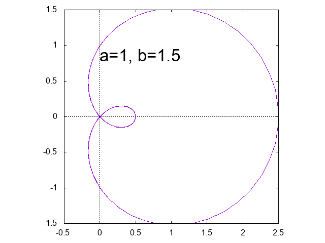
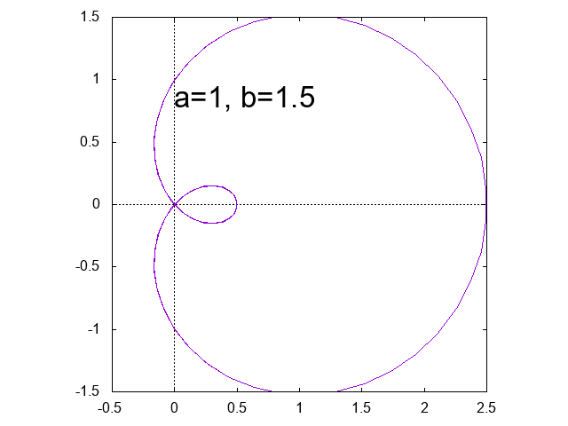
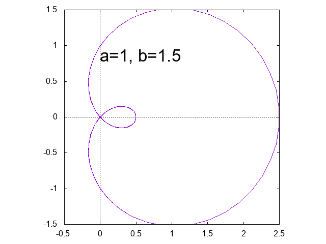
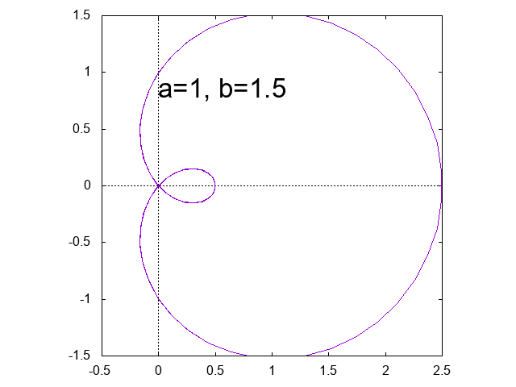

GNUPLOT入門
gnuplot入門(テキスト)
リサージュ曲線 \[ x = \sin a t, \qquad y= \sin b t \]


アルキメデスの渦巻線 \[ r = a \theta \]
正葉曲線 \[ r = \sin a \theta \]


リマソン \[ r = a + b \cos \theta \]

 

レム二スケート \[ (x^2+y^2)^2 = 2 a^2(x^2-y^2) \]
 
